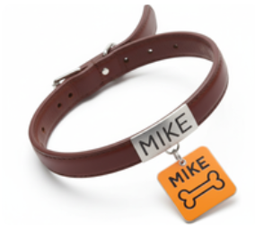

El collar FIDO facilita la ubicación rápida (sistema de color por área) y la identificación (grabado QR gratuito con tus datos).
Configura tu
Collar FIDO
1. Elige el modelo y color →
2. Verifica sus datos (Siguiente paso)
3. Personaliza la placa (Paso final)
¡Comenzar Configuración Ahora!